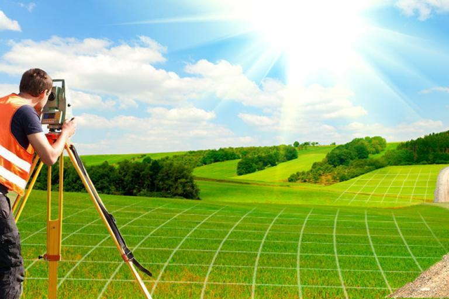

Кадастровые работы — это выполнение услуг по подготовке информации и
определения недвижимости в качестве индивидуально-определенной вещи.
Это и геодезические измерения, и сбор необходимых документов и
сведений, и составление новых документов. Если кратко, кадастровые
работы можно охарактеризовать как действия уполномоченных на то лиц
по получению сведений об объектах недвижимости, необходимых для
постановки на кадастровый учет.
Что такое кадастровые работы
Любой объект недвижимости, будь то участок земли, дом, хозяйственное
строение, гараж, баня и т.п., одним словом, все что фундаментально
связано с землей, является объектом кадастровой работы. Прежде чем
оформить документально постройку или земельный участок, закон
устанавливает проведение ряда мероприятий, направленных на
закрепление объекта недвижимости на местности и на описание его
основных характеристик.
Межевание
Что такое межевание земельного участка?
Межевание - это работы по установлению границ земельного участка,
их восстановлению и закреплению на местности, а также определению
его местоположения и площади. В настоящее время, термин
"межевание" в законодательстве практически не используется, но
межевание, как процесс установления границ земельного участка,
проводится и сейчас, и выполняется путем проведения кадастровых
работ. В результате проведения кадастровых работ изготавливается
межевой план.
Чаще всего межевание участка делают по следующим причинам:
согласование границ (при возникновении споров с соседями);
установление границ при выделении участка органами власти (из
состава муниципальных или государственных земель);
восстановление площади участка на местности.
Обязательно ли проводить межевание земельного участка?
Межевание земельного участка должно проводиться обязательно, если
образуется новый участок (участки) или уточняются границы уже
существующего. Оно проводится путем выполнения кадастровых работ.
По их результатам будут подготовлены документы, необходимые для
кадастрового учета земельного участка (учета изменений). Без них
невозможно поставить участок на кадастровый учет и
зарегистрировать права на него или внести изменения по результатам
уточнения границ земельного участка.
Пока что, до наступления 2021 года, определение границ – процедура
необязательная (Федеральный закон № 218 от 13.07.2015 г. «О
государственной регистрации недвижимости»). С 1 января 2021
года, межевание земельного участка необходимо, если меняется его
владелец. Переход права собственности при перераспределении или
выделении земли, согласно поправкам в законе, будет осуществляться
только при наличии межевого плана. Это значит, что для всех
владельцев новых участков межевание – обязательная процедура.
Основные операции, для которых с 01.01.2021 г. межевание станет
обязательным:
обмен;
купля-продажа;
наследование;
дарение;
объединение и разделение земли;
разрешение судебных споров.
Изготовление технического плана
Чтo тaкoe тexничecкий плaн?
Технический план – это документ, подготавливаемый кадастровым
инженером, который несет в себе необходимые сведения и данные об
объекте недвижимости, вносящиеся в государственный кадастр
недвижимости. Технический план объединяет комплекс информации об
объекте – планировке, а также как жилой, так и нежилой площади.
Его разрабатывают кадастровые инженеры для жилых домов, квартир, а
также нежилых помещений, сооружений и объектов незавершённого
строительства.
Для чего нужен технический план?
Технический план необходим для постановки на кадастровый учет
объекта недвижимости в УФРСКиК (Росреестр) при первичной
регистрации права собственности на него. Если право собственности
на объект недвижимости уже зарегистрировано, то подготовка
технического плана необходима только для внесения изменений в
ЕГРН. Например, изменилась площадь после реконструкции или нужно
выделить часть помещений для регистрации аренды. Также потребуется
Бесплатная консультация технический план при разделе объекта
недвижимости или объединении нескольких объектов в один.
Инженерно-геодезические изыскания

Геодезические изыскания обеспечивают получение
топографо-геодезических материалов и данных о ситуации и рельефе
местности, существующих зданиях, сооружениях и других элементах
планировки, необходимых для комплексной оценки природных и
техногенных условий территории строительства и обоснования
проектирования.
Топографическая съемка
При топографической съемке фиксируются высоты и координаты
наносимых на план объектов. Для небольших объектов съемка
выполняется в масштабе 1:500. Для более крупных участков применяют
съемку в масштабе 1:1000 или 1:2000.
Съемка производится специальными геодезическими приборами,
тахеометрами, либо теодолитами. Современные цифровые тахеометры
позволяют проводить съемку одному человеку и сразу же передавать к
нам в офис полученные данные.
Для обнаружения или уточнения расположения подземных коммуникаций
применяются трассоискатели.
При необходимости выполнения геодезических изысканий для больших
по площади объектов, на помощь приходят аэрофотосъемка и
фотографии из космоса.
Камеральная обработка данных
Собранная в полевых условиях информация обрабатывается
специальными компьютерными программами. Полученный в результате
топографический план распечатывается на широкоформатных
графических плоттерах и передается Заказчику либо включается в
Технический отчет.
Градостроительные услуги
Деятельность в области градостроительства направлена на помощь в
развитии территорий, планировании земельных участков,
осуществлении зонирования, проведении архитектурного строительства
и капитальных ремонтов. В Земельном кодексе Российской Федерации
прописано, что все работы такого характера должны соответствовать
экологическим, санитарным, противопожарным нормам, а также
нормативному регламенту. Поэтому, федеральные государственные
системы и органы самоуправления внимательно следят за выполнением
положений, прописанных в действующем законодательстве.
Сегодня наша компания оказывает широкий спектр услуг в этой сфере.
Специалисты помогут каждому клиенту определиться с необходимыми
направлениями строительства. Какие услуги получает заказчик:
профессиональную консультацию по вопросам подготовки уведомления
о планируемом строительстве или реконструкции, получения
технических условий условий;
правильное и быстрое составление уведомлений;
помощь в сборе нужных документов.
Юридические услуги
Операции с недвижимостью и решение земельных вопросов практически
невозможно организовать без предварительной юридической
консультации. А сложные задачи вроде исправления кадастровых
ошибок или определения доли наследства и вовсе нельзя решить
самостоятельно. Мы предлагаем свою помощь и предоставляем
юридические услуги по всем вопросам, связанным с кадастровыми
работами.
В нашей компании работают опытные специалисты, хорошо знающие все
тонкости и нюансы земельного законодательства, правила оформления
документации, требования государственных проверяющих инстанций.
Поэтому Вы можете быть уверены, что сотрудники нашей компании
предоставят Вам квалифицированную юридическую помощь.
Почему мы?
«Геокад» предоставляет все виды кадастровых услуг и геодезических
работ по Рязани и Рязанской области, осуществляет деятельность на
рынке более 25 лет.
Высокий профессиональный уровень, многолетний опыт работы,
ответственность сотрудников, строгое соблюдение законодательных
требований позволяют нам справляться с задачами любой сложности.
Компания сотрудничает со всеми категориями заказчиков.
Кадастровый инженер в наше время – это специалист, который в силу
своей деятельности совмещает навыки геодезиста, землеустроителя,
оценщика и даже юриста. В этом состоит и трудность, и
ответственность при предоставлении услуг, таких нужных участникам
рынка недвижимости.
Мы хорошо понимаем, что горечь плохого качества ощущается даже
тогда, когда сладость низкой цены давно забыта.
Удовлетворенность заказчиков является для нас главным приоритетом.
Наши клиенты
Администрация Города Рязани
Администрация города Сасово Рязанской области
Администрация Ермишинского Муниципального района
×
Заказ обратного звонка
8 (910) 641-67-51
в г.
Сасово: 8 (49133) 5-14-71
geokad.sasovo@mail.ru
geokadrzn
г. Рязань, Касимовское шоссе, стр. 8в, 3 этаж
391430, Рязанская область, г. Сасово, ул. Кадомская, д. 58
Стоимость работ в 2020г.
Подготовка межевых планов на земельные участки:
Подготовка межевого плана по уточнение границ земельного
участка
от 7900 ₽
Подготовка межевого плана по разделу земельного участка
от 5 900 ₽
Подготовка межевого плана по образованию земельного участка
от 5 900 ₽
Подготовка межевого плана по перераспределению границ
земельного участка
от 5 900 ₽
Подготовка межевого плана по образованию земельного участка из
Государственной или муниципальной собственности
от 7 900 ₽
Подготовка схем границ земельного участка или схем
расположения земельного участка на кадастровом плане
территории
от 4 900 ₽
Подготовка технических планов:
Подготовка технического плана жилого, садового, дачного дома
от 8 500 ₽
Подготовка технического плана нежилого помещения
от 7 200 ₽
Подготовка технического плана сооружения
от 8 900 ₽
Подготовка технического плана объекта незавершенного
строительства
от 8 900 ₽
Подготовка технического плана помещения
от 5100 ₽
Подготовка технического плана части здания, части помещения
от 5100 ₽
Вынос границ на местности
от 500 ₽
Подготовка актов обследования (сноса)
от 4 800 ₽
Подготовка карт-планов в объектов землеустройства, описаний
границ зон с особыми условиями использования территории
от 12 200 ₽
Выполнение геодезических работ - топографическая
съемка
от 6 000 ₽
Выполнение геодезических работ - исполнительная
съемка
от 5 000 ₽
Выполнение геодезические разбивочные работы
от 1 000 ₽
Геодезический контроль
от 1 200 ₽
АКЦИЯ!
При одновременном оформлении земельного участка и здания получите
скидку 10% на изготовление технического плана.


 geokadrzn
geokadrzn